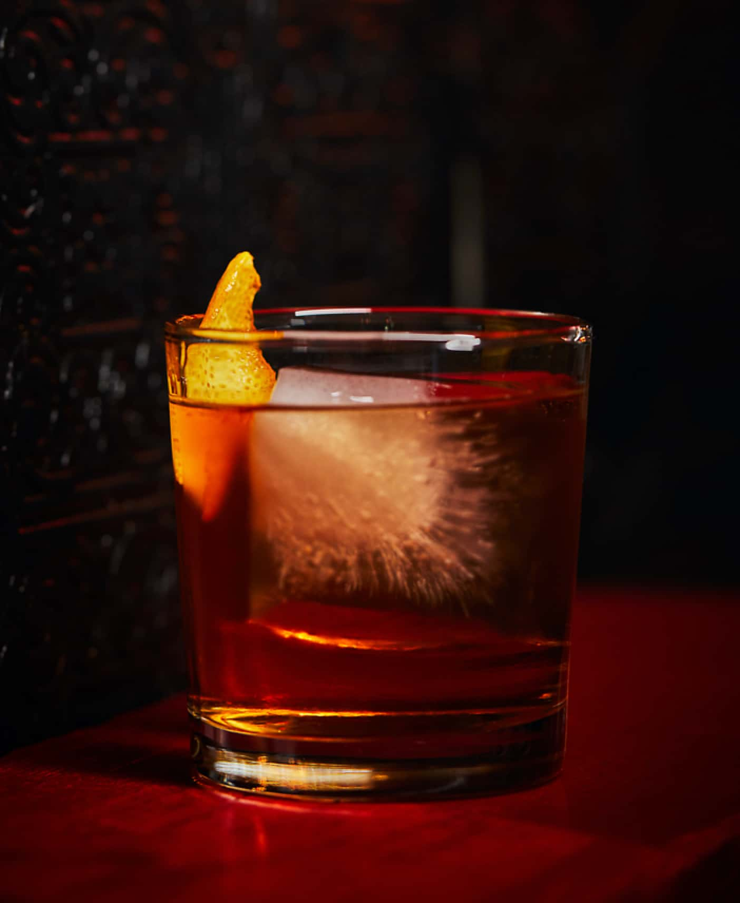
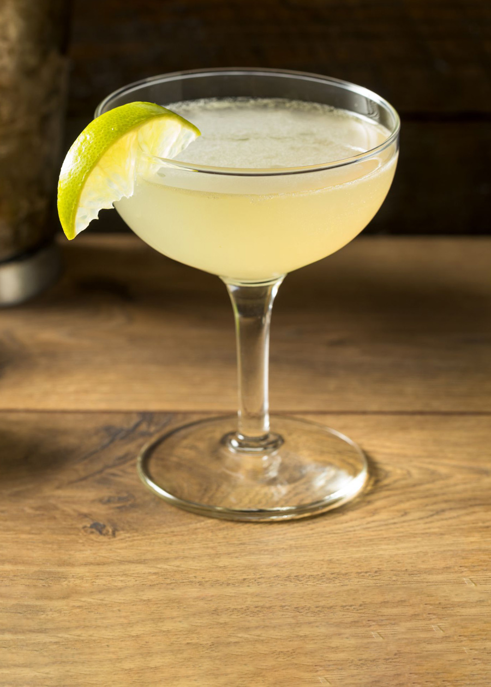

Cool Cocktails is here to help you with your cocktail curiosities. Check out the About page for more information.
Margarita
This classic margarita is perfect for summers in the sun to add a tropical vibe to your day.
Margarita RecipeOld Fashioned Whiskey
This Old Fashioned is my choice of drink for relaxing by a fire with a good book.
Old Fashioned RecipeMartini

My go-to drink when hanging out with friends and we want to get a little tipsy.
Martini RecipeGin & Tonic

This Gin & Tonic is a very simple, very enjoyable drink that is good for any occasion.
Gin & Tonic RecipeManhattan
An elegant drink for rye enjoyers that has both sweetness and bitterness.
Manhattan RecipeDaiquiri
Another drink perfect for the summer, or any time really, with a cool, crisp, refreshing vibe.
Daiquiri Recipe